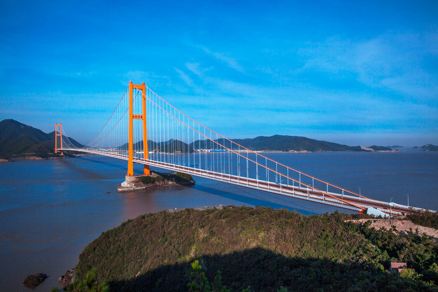

Te mosty są nie tylko symbolem nowoczesności, ale także wyjątkową odpowiedzią na potrzeby przekraczania dużych odległości. Ich konstrukcja opiera się na elastyczności, pozwalając na równomierne rozłożenie ciężaru i płynne przejścia nad wodami czy głębokimi przepaściami.
Elegancja i efektywność idą tu w parze - mosty wiszące pozwalają na przemieszczanie się z gracją i bezpieczeństwem, stanowiąc nie tylko drogę, ale także symfonię inżynieryjnej precyzji. Każdy krok po nich to podróż nie tylko fizyczna, lecz także estetyczna, przywołująca podziw dla ludzkiego talentu w tworzeniu monumentalnych, funkcjonalnych i pięknych konstrukcji.
| Most | Kraj | Długość Całkowita | Zdjęcie |
|---|---|---|---|
| Akashi Kaikyo | Japonia | 3 910 | |
| Messina Strait | Włochy | 3 600 |  |
| Izmit Bay | Turcja | 3 300 | |
| Xihoumen | Chiny | 5 300 |  |